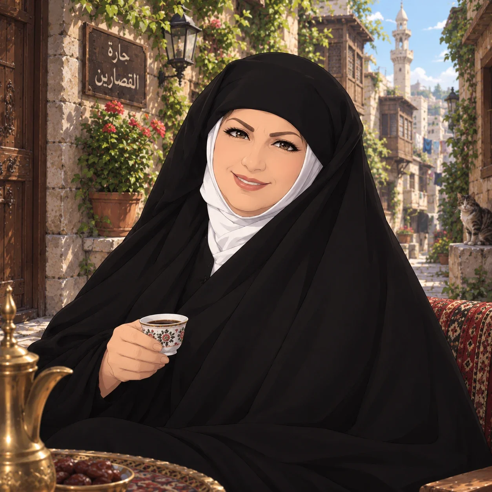
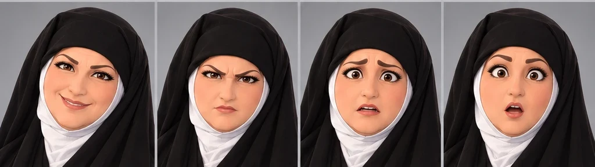
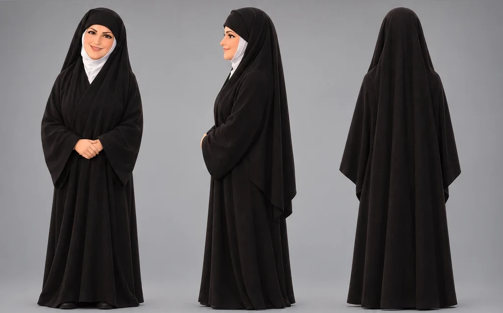
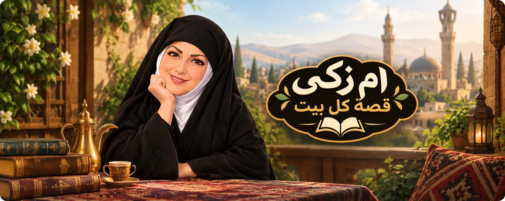

حكايا تضحّك
مواقف الجيران وسوء الفهم الطريف، وردّات فعل أم زكي التي لا تُنسى.
قصص وحكايا
من قلب الحارة الدمشقية، تحكي لك أم زكي حكايا الجيران والعيلة والذكريات، بضحكة دافئة وقلب كبير. وكل حكاية فيها شيء منك.
من هي أم زكي؟
أم زكي سيدة دمشقية من أهل الحارة. شهدت أفراح الجيران وأتراحهم، وحفظت أسرار البيوت في قلبها قبل لسانها. تنظر إلى الأمور بعين الحكمة، وتحكيها بخفة ظل لا تجرح أحدًا.
لا تعظ ولا تحكم على أحد؛ تحكي فقط، ويبقى للحكاية أن تقول ما عندها.

الحكايا
ثلاثة ألوان من القصص، وشخصية واحدة تبقى كما تعرفها في كل مرة.
مواقف الجيران وسوء الفهم الطريف، وردّات فعل أم زكي التي لا تُنسى.
علاقات العيلة، والمصالحات، واللحظات الصغيرة التي تلمس الروح.
أكلات وأمثال وذكريات من الشام القديمة، تعيدك إلى بيت جدّتك.
الحلقة الأولى · قريبًا
أم زكي على وشك أن تنشر خبرًا مثيرًا عن جارتها أم خالد... لكن رائحة المعمول في الحارة كان لها رأي آخر!
كن أول من يشاهدهاوجوه كثيرة
من الضحكة الدافئة إلى الدهشة، كل شعور يظهر على وجه أم زكي قبل أن تنطق به.


تعرّف عليها
مهما تغيّرت الحكاية أو المكان، تبقى أم زكي هي أم زكي: الوجه نفسه، والدفء نفسه، والإطلالة المألوفة.
«ام زكي قصة كل بيت»
وكل بيت فيه حكاية تستحق أن تُروىتابعنا
تابع أم زكي على المنصات لتصلك كل حكاية جديدة.
